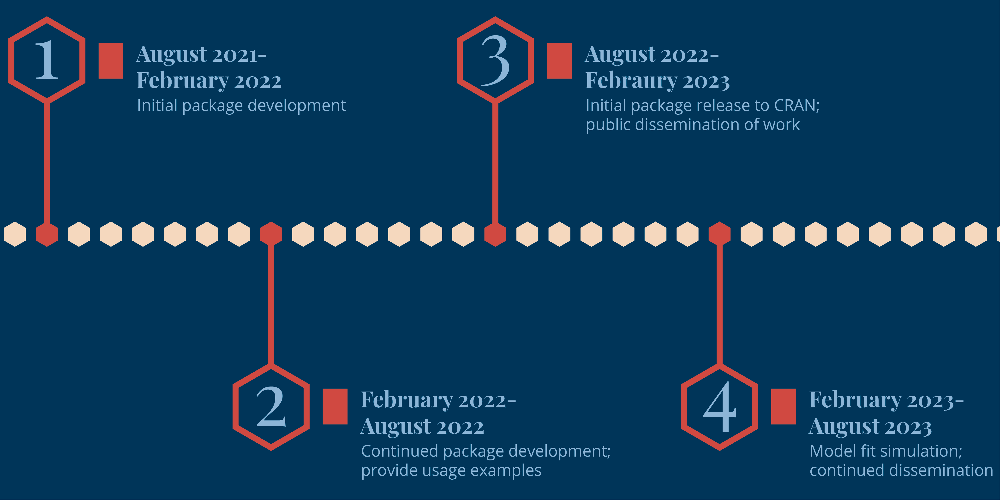

measr is an R package for the estimation and evaluation of educational measurement, or psychometric, models. Initial development is focused on diagnostic classification models (DCMs), specifically the loglinear cognitive diagnostic model (LCDM). DCMs are a powerful tool that can be used to estimate mastery profiles for respondents on a set of pre-defined skills that are measured by the assessment. The measr package will provide improved model estimation techniques, including a fully Bayesian estimation using Stan. Additionally, measr will include functions to easily evaluate how well the estimated model fits the observed data.
This package is under active development, and functions may change prior to the initial release. If you’d like to use the development version, it can be installed from GitHub.
# install.packages("remotes")
remotes::install_github("wjakethompson/measr")Timeline
There are two main phases to the project. During the first year of the project, effort is focused on developing measr. This includes building functionality, documenting usage, and providing example case studies. In the second year of the project, measr will be officially released to CRAN and effort will shift to dissemination. Work in the second phase includes writing journal articles about how to use measr, presenting at conferences, and using measr in new research projects to guide best practices for the implemenation of DCMs in applied research settings.

Project Goals
Initial development of measr is being funded by a grant from the Institute of Education Sciences. Within the scope of the grant, there are two main goals:
Develop a user-friendly R package for the estimation of the LCDM and other common DCMs. This is accomplished with extensive documentation, example case studies, and an accessible website to support use by applied researchers.
Provide best practices for the evaluation of DCMs in practice. During the second phase of work, a simulation study will be conducted, using measr, to evaluate different measures of model and examine how each relates to how accurately the model identifies respondent mastery of the assessed skills.
After the grant funding period as ended, we plan to explore incorporating functionality for additional educational measurement models, such as item response theory.